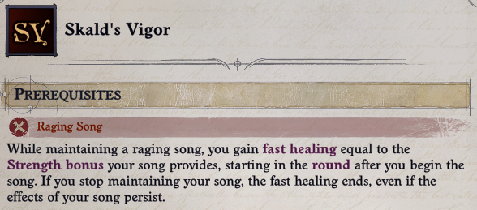
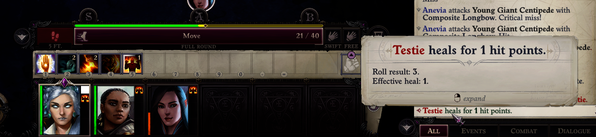
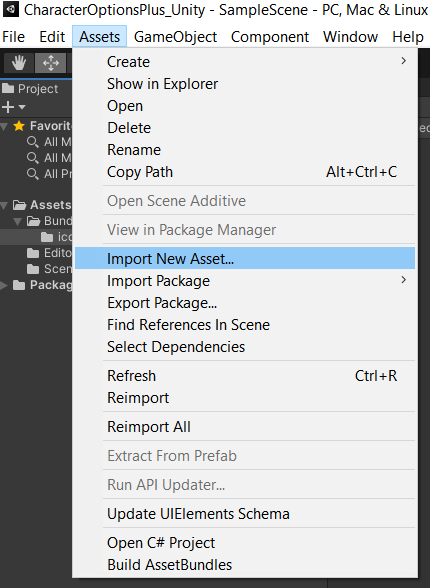
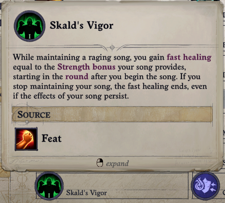
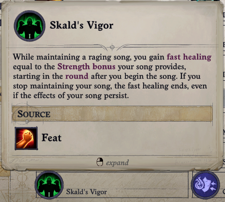

Advanced Feat: Skald's Vigor
This tutorial assumes you've gone through Adding a Feat or are otherwise familiar with the basics of adding a feat.
We'll be adding Skald's Vigor.
Go through the basic setup steps:
- Create the
SkaldsVigorclass - Create the
Configuremethod - Create the feat, setting the name and description
public class SkaldsVigor
{
public static void Configure()
{
FeatureConfigurator.New(FeatName, FeatGuid, FeatureGroup.Feat, FeatureGroup.CombatFeat)
.SetDisplayName("SkaldsVigor.Name")
.SetDescription("SkaldsVigor.Description")
.Configure();
}
}
Make sure to add "SkaldsVigor.Name" and "SkaldsVigor.Description" to your LocalizedStrings.json file.
Adding a Prerequisite
First let's make sure the feat is only available to character with the Raging Song feature. There's a category of components to implement feature preqrequisites. You can find them by searching Prerequisite in the FeatureConfigurator API or the decompiler.
For this use AddPrerequisiteFeature and pass in the Raging Song feature. You can find the Raging Song feature using BubblePrints or by searching FeatureRefs:
FeatureConfigurator.New(FeatName, FeatGuid, FeatureGroup.Feat, FeatureGroup.CombatFeat)
.SetDisplayName("SkaldsVigor.Name")
.SetDescription("SkaldsVigor.Description")
.AddPrerequisiteFeature(FeatureRefs.RagingSong.ToString())
.Configure();
Unfortunately FeatureRefs.RagingSong provides Blueprint<BlueprintReference<BlueprintFeature>> but AddPrerequisiteFeature expects Blueprint<BlueprintFeatureReference>. There's no way to automatically convert but you can call ToString() to get the GUID directly. You can also use the cast method: FeatureRefs.RagingSong.Cast<BlueprintFeatureReference>().
![TIP] In this example there is only a single version of Raging Song. Some features have multiple versions such as a Magus's Spell Combat. You can require one of a set of features using PrerequisiteFeaturesFromList.
Go ahead and test it out. It should be available to characters with Raging Song:

and unavailable to characters without it:

Fast Healing
Applying fast healing is done by creating a new buff:
BuffConfigurator.New(BuffName, BuffGuid)
.SetDisplayName("SkaldsVigor.Name")
.SetDescription("SkaldsVigor.Description")
.AddEffectContextFastHealing(bonus: ContextValues.Rank())
.AddContextRankConfig(
ContextRankConfigs.ClassLevel(new string[] { CharacterClassRefs.SkaldClass.ToString() })
.WithCustomProgression((7, 2), (15, 4), (16, 6)))
.Configure();
The custom progression results in 2 fast healing until level 8, then 4 until level 16 where it caps out at 6.
Now we'll need to apply the buff when Raging Song is active. To do that we'll need to have some way to trigger applying the buff. If you look at the RagingSong blueprint in BubblePrints it isn't very helpful. However, it is referenced in SkaldProgression and searching that reveals another feature, InspiredRage, which grants InspiredRageAbility which is the activatable ability for Raging Song.
Activatable abilities are typically implemented using a buff which is enabled or disabled when the ability is toggled. In this case the buff is InspiredRageBuff which spawns InspiredRageArea which applies the actual effects using InspiredRageEffectBuff.
![NOTE] You could avoid modifying existing blueprints by adding a
FactsChangeTriggercomponent to the feat itself, which allows you to execute actions in response to a fact, such as theInspiredRageBuff, being applied or removed. The tutorial avoids this approach because it only works for Skald's Vigor, not Greater Skald's Vigor.
There are multiple ways to apply the buff, we'll add an AddFactContextActions component to InspiredRageEffectBuff:
BuffConfigurator.For(BuffRefs.InspiredRageEffectBuff)
.AddFactContextActions(
activated:
ActionsBuilder.New()
.Conditional(
ConditionsBuilder.New().TargetIsYourself().HasFact(FeatName),
ifTrue: ActionsBuilder.New().ApplyBuffPermanent(BuffName, isNotDispelable: true))
.Configure();
Since the existing buff is modified it effects every application. The conditional check ensures it only applies to characters with the feat.
The buff is permanent and non-dispellable since it is a rider effect on Inspired Rage, not an individual buff. Note that by default ContextActionApplyBuff sets asChild to true. This means Skald's Vigor is removed when Inspired Rage is removed, no need to explicitly remove it.
Test it out and you should see something similar to this:

It works! ... or does it? Keep testing and the fast healing does not apply every round. Something is wrong, but what?
![NOTE] If it works consistently you may have a mod that accidentally fixes the issue. Otherwise test in turn based combat; in my testing this was the most reliable way to trigger fast healing failures.
Troubleshooting
There are two ways to investigate further: Wrath2Debug or method patching.
I used both techniques but I'm not going to walk through Wrath2Debug as it''s complicated to setup and use. Instead read the game code and try patching methods to log details.
First look up the AddEffectContextFastHealing component in the decompiler. It triggers each round by implementing ITickEachRound.OnNewRound(). Search for uses of this method:

![TIP] When searching for uses of interface methods in dnSpy, go to the interface definition and search from there. Searching from an implementation usually returns nothing.
Ignore TacticalCombatUnitTicksController which is used for army combat. Check UnitTicksController.TickNextRound(); it explicitly doesn't handle buffs. This means Buff.TickMechanics() is responsible for triggering fast healing.
Now you could try patching Buff.TickMechanics() but there's a patch: this is called for an individual buff which only works if the buff is being called properly. Reading through how the method works it's probably not being called because the component is just tied to the blueprint; it''s either always there or not. Nothing changes that.
Fortunately Buff.TickMechanics() is only called by BuffCollection.TickBuff() which is called by BuffCollection.Tick(). BuffCollection represents all the buffs on a unit, so Tick() is responsible for triggering new round effects on all buffs.
You can patch Tick() and log data; I ended up patching UpdateNextEvent() which selects the buff which should trigger next. Either way start by logging what buff is ticking:
[HarmonyPatch(typeof(BuffCollection))]
static class BuffCollection_Patch
{
// Store the Skald's Vigor buff for quick reference
static BlueprintBuff Buff;
[HarmonyPatch(nameof(BuffCollection.UpdateNextEvent)), HarmonyPrefix]
static void Prefix(BuffCollection __instance)
{
try
{
if (!Buff)
{
Buff = BlueprintTool.Get<BlueprintBuff>(BuffName);
}
// Limit to MC to reduce log spam (remove if you are not testing with the main character)
if (__instance.Owner.Unit.IsMainCharacter)
{
Logger.Info($"UpdateNextEvent Prefix: {Game.Instance.TimeController.GameTime}");
// Check each buff on the unit to find Skald's Vigor
foreach (Buff buff in __instance.RawFacts)
{
if (buff.Blueprint == Buff)
{
// Log the next tick time and the current game time
Logger.Info($"{buff.Name}: {buff.NextEventTime} vs {Game.Instance.TimeController.GameTime}");
}
}
}
}
catch (Exception e)
{
Logger.Error("Failed to prefix UpdateNextEvent.", e);
}
}
}
![TIP] Always wrap your patches in try/catch statements and log exceptions. If you don't the exception may not be logged resulting in silent failures.
The purpose of this patch is to look for discrepencies in the buff trigger timing. If the buff works correctly buff.NextEventTime should increment by 6 seconds every 6 seconds of game time, since 6 seconds is one round.
Test it in and out of combat and look at the log (I added the numbers for reference):
[143.6401 - Mods]: SkaldsVigor: UpdateNextEvent(1) Prefix: 12:11:40.7940000
[143.6401 - Mods]: SkaldsVigor: Skald's Vigor: 12:11:40.7940000 vs 12:11:40.7940000
[147.4715 - Mods]: SkaldsVigor: UpdateNextEvent(2) Prefix: 12:11:42.2940000
[147.4715 - Mods]: SkaldsVigor: Skald's Vigor: 12:11:40.7940000 vs 12:11:42.2940000
[147.4715 - Mods]: SkaldsVigor: UpdateNextEvent(3) Prefix: 12:11:42.2940000
[147.4724 - Mods]: SkaldsVigor: UpdateNextEvent(4) Prefix: 12:11:42.2940000
[147.4724 - Mods]: SkaldsVigor: Skald's Vigor: 12:11:46.7940000 vs 12:11:42.2940000
![TIP] Make sure to disable ILStrip or add your patch to the Entry Points in your .csproj file. I recommend disabling ILStrip for Debug builds.
A few things are wrong:
- UpdateNextEvent(1) should trigger Skald's Vigor, but if it did trigger then the next tick time of UpdateNextEvent(2) should be
12:11:46.794. - When UpdateNextEvent(3) is called Skald's Vigor is not present.
If you pay careful attention to the buff UI in game you might spot the problem. Look at the blueprints for InspiredRageEffectBuff and InspiredRageArea again. Anything stand out?
InspiredRageArea applies InspiredRageEffectBuff if either:
- A valid target enters the area
- A valid target is in the area each round
In other words: InspiredRageEffectBuff is reapplied every round. Since its stacking type is StackingType.Replace it's removed and added every round. Components that tick each round trigger a round after they are applied. So every round Skald's Vigor is removed and added, delaying the fast healing to the next round. Game time is a little fuzzy so sometimes it triggers before being removed.
There are a few ways to fix this but the simplest is to change the stacking behavior of Inspired Rage:
BuffConfigurator.For(BuffRefs.InspiredRageEffectBuff)
.AddFactContextActions(
activated:
ActionsBuilder.New()
.Conditional(
ConditionsBuilder.New().TargetIsYourself().HasFact(FeatName),
ifTrue: ActionsBuilder.New().ApplyBuffPermanent(BuffName, isNotDispelable: true))
.SetStacking(StackingType.Ignore)
.Configure();
Now Inspired Rage is not removed every round and Skald's Vigor works! This has side effects:
- If other abilities were relying on Inspired Rage being re-applied every round they will break.
- If two characters activate Inspired Rage the first character's ability applies instead of the second.
It's up to you to determine if these side effects are acceptable. One way to avoid them: create a new Condition that checks ActivatableAbility.IsOn and use it in the Conditional:
ConditionsBuilder.New()
.TargetIsYourself()
// Only apply the buff if Inspired Rage is active
.Add(new ActivatableAbilityIsOn(ActivatableAbilityRefs.InspiredRageAbility, negate: true))
// Prevent the buff from being re-applied
.HasFact(BuffName, negate: true)
.HasFact(FeatName)
There are two problems now: there is no buff icon and if you have Lingering Performance the healing is not removed immediately.
Handling Lingering Performance
First we need to understand how Lingering Performance is implemented using BubblePrints:

The only component with any mechanical effect is AddMechanicsFeature, and it's basically empty. To find out more you'll need to look up the component in a decompiler. It takes a bit of digging to find anything useful, so here's the overview:
AddMechanicsFeaturedeclares theMechanicsFeatureTypeenum which hasLingeringPerformanceas a value- Following the enum doesn't turn up much, but notice that
GetFeature()is used to look up aCountableFlagin the component'sOnTurnOn()andOnTurnOff()methods - Looking for usages of the
UnitMechanicsFeatures.LingeringPerformanceflag leads toActivatableAbility.Stop()
Here you can see the logic:

This doesn't look good. ActivatableAbility is the "concrete" representation of BlueprintActivatableAbility and m_AppliedBuff is the associated buff. From this code you can see that InspiredRageBuff isn't removed when Raging Song is deactivated, so using FactsChangeTrigger won't work.
If you can't use the buff then you need to trigger when the ability deactivates. There isn't a component to do this but there is an event that triggers, as seen in ActivatableAbility.Stop(): IActivatableAbilityWillStopHandler.
Create a class which implements IActivatableAbilityWillStopHandler:
private class InspiredRageDeactivationHandler : IActivatableAbilityWillStopHandler
{
public void HandleActivatableAbilityWillStop(ActivatableAbility ability)
{
// TODO
}
}
Once registered an event handler will trigger on all applicable events. That means HandleActivatableAbilityWillStop() is called every time any activatable ability is turned off. The first thing the method should do is filter out unrelated events:
if (ability?.Blueprint != ActivatableAbilityRefs.InspiredRageAbility.Reference.Get())
{
return;
}
![NOTE] Blueprints can be directly compared because there is only a single cached instance of any given game blueprint.
Now it just needs to remove the Skald's Vigor buff. To get an idea of how to remove a buff look at the decompiled code for ContextActionRemoveBuff, the same action we're already using to remove the buff:
Buff skaldsVigor = ability.Owner.Buffs.GetBuff(BlueprintTool.Get<BlueprintBuff>(BuffGuid));
skaldsVigor?.Remove();
The last thing to do is register the handler inside of Configure():
EventBus.Subscribe(new InspiredRageDeactivationHandler());
Test it with Lingering Performance and the buff should clear at the start of your next turn while Inspired Rage remains.
Adding an Icon
Select an Icon
This tutorial doesn't walk through creating an icon. You can use the Unity Asset Store to find an icon, paid or free.
My icons are edited composites of existing in-game icons:
- Download AssetStudio
- Extract game assets
- Most icons are in
%WrathPath%\Bundles\icons
- Most icons are in
- Open icons in your photo editor of choice, I use GIMP
- Combine, edit, and tweak the icon to your heart's content
If you're creating new icons they should be 64x64.
Here are the icons we'll use for Skald's Vigor: 

Create an AssetBundle
It is common for mods to import PNG files directly, see TabletopTweaks-Core's AssetLoader for an example. This works but is not efficient and doesn't work if you want to import other assets such as models, textures, and shaders.
- Download Unity version
2019.4.26f1 - Create a new project with the 3D template
- Create a script to build an AssetBundle using Unity's Tutorial
- Create a new folder in Assets called Icons
Your Unity project should look similar to this:

Select the icons folder, then Assets > Import New Asset and choose your icon image file.

Your icon should be displayed in the folder contents. Select it and in the Inspector tab set Texture Type to Sprite (2D and UI) and click Apply.
With the icon still selected, click the AssetBundle dropdown at the bottom of the Inspector tab, select New and enter blueprintcoretutorial_assets. This determines which generated AssetBundle will contain the icon. The Inspector tab should look like this:

![NOTE] Currently BPCore only supports a single AssetBundle called
assemblyname_assets. The icons folder is for organization but everything should go to the assets bundle. If your mod was called TabletopStuff it would betabletopstuff_assets.
Create the AssetBundle by selecting Assets > Build AssetBundles. Unity generates the StreamingAssets folder which should contain two AssetBundles: blueprintcoretutorial_assets and StreamingAssets. You can ignore StreamingAssets.
Deploy the AssetBundle
Back in your mod right click your project and select Add > Existing Item. Navigate to the folder containing your AssetBundle and add it to the project. Make sure you set file filter to All Files at the bottom right. Ignore *.manifest, *.meta, and *.manifest.meta.
Right click the AssetBundle, select Properties, then set Copy to Output Directory to Copy if newer:

Open your project file and update your deployment target:
<Target Name="Deploy" AfterTargets="ILStrip">
<ItemGroup>
<Assembly Include="$(OutputPath)\$(AssemblyName).dll" />
<ModConfig Include="$(OutputPath)\Info.json" />
<Strings Include="$(OutputPath)\LocalizedStrings.json" />
<Assets Include="$(OutputPath)\assets" />
</ItemGroup>
<Copy SourceFiles="@(Assembly)" DestinationFolder="$(WrathPath)\Mods\$(MSBuildProjectName)" />
<Copy SourceFiles="@(ModConfig)" DestinationFolder="$(WrathPath)\Mods\$(MSBuildProjectName)" />
<Copy SourceFiles="@(Strings)" DestinationFolder="$(WrathPath)\Mods\$(MSBuildProjectName)" />
<Copy SourceFiles="@(Assets)" DestinationFolder="$(WrathPath)\Mods\$(MSBuildProjectName)" />
</Target>
Use the Asset
When a method parameter maps to an asset, BPCore request an Asset
For your own AssetBundle the Asset ID is the name as defined by Unity, typically the file path relative to the Unity project directory. In this case: assets/icons/skaldvigor.png. If you're ever unsure, look in the assets.manifest file under "Assets". It is also shown at the bottom of the inspector tab in Unity.
Now you can set the icon on the feat and buff:
BuffConfigurator.New(BuffName, BuffGuid)
.SetDisplayName("SkaldsVigor.Name")
.SetDescription("SkaldsVigor.Description")
.SetIcon("assets/icons/skaldvigor.png")
.AddEffectContextFastHealing(bonus: ContextValues.Rank())
.AddContextRankConfig(
ContextRankConfigs.ClassLevel(new string[] { CharacterClassRefs.SkaldClass.ToString() })
.WithCustomProgression((7, 2), (15, 4), (16, 6)))
.SetStacking(StackingType.Ignore)
.Configure();
FeatureConfigurator.New(FeatName, FeatGuid, FeatureGroup.Feat, FeatureGroup.CombatFeat)
.SetDisplayName("SkaldsVigor.Name")
.SetDescription("SkaldsVigor.Description")
.SetIcon("assets/icons/skaldvigor.png")
.AddPrerequisiteFeature(FeatureRefs.RagingSong.ToString())
.Configure();
Test it out and you should see the icon:
 

Greater Skald's Vigor
With Skald's Vigor done the next step is implementing Greater Skald's Vigor.
The asset bundle should already have the new icon, so just add the new strings and create the feat:
FeatureConfigurator.New(GreaterFeatName, GreaterFeatGuid, FeatureGroup.Feat, FeatureGroup.CombatFeat)
.SetDisplayName(GreaterFeatDisplayName)
.SetDescription(GreaterFeatDescription)
.SetIcon("assets/icons/greaterskaldvigor.png")
.AddPrerequisiteFeature(FeatName)
.Configure();
Update the buff configuration changes applied to InspiredRageEffectBuff:
var applyBuff = ActionsBuilder.New().ApplyBuffPermanent(BuffName, asChild: false, isNotDispelable: true);
AddFactContextActions(
activated:
ActionsBuilder.New()
.Conditional(
ConditionsBuilder.New().TargetIsYourself().HasFact(FeatName),
ifTrue: applyBuff)
.Conditional(
ConditionsBuilder.New().CasterHasFact(GreaterFeatName),
ifTrue: applyBuff),
Technically this results in applying the buff to the caster twice if they have Greater Skald's Vigor, but the default behavior for buffs is replace so only a single instance is applied.
Test it out and it should apply to your party:

Completing the Feat
There are two more changes needed to finish Greater Skald's Vigor:
- Require 10 ranks in Performance (song)
- Add support for Lingering Performance
These are left as an exercise. One solution is available in the "Solutions" folder if you're stuck or want to compare.
Tips:
- Performance isn't a skill in Wrath so you'll need to decide on an appropriate equivalent requirement
InspiredRageDeactivationHandlertriggers once on the unit using Inspired Rage, so you need to find every affected unit and remove the buff- Remember that
InspiredRageEffectBuffis applied byInspiredRageArea - Look at the
SourceAreaEffectIdfield of theBuffclass
- Remember that